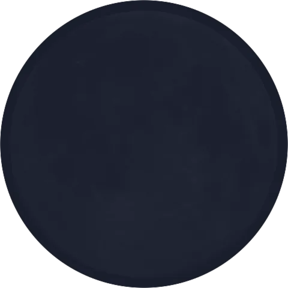
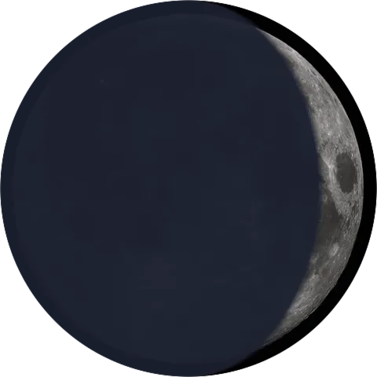
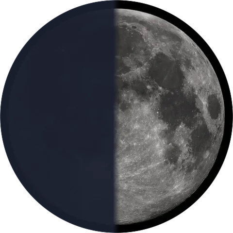
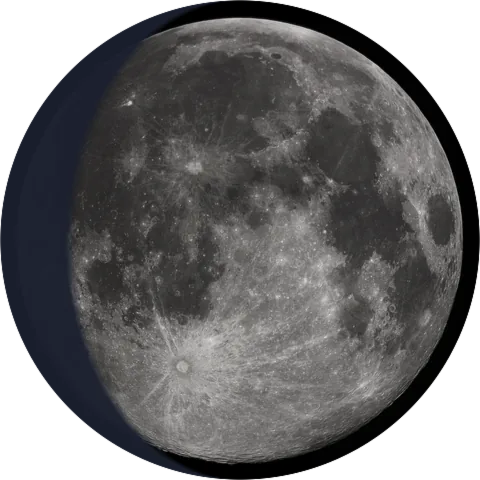
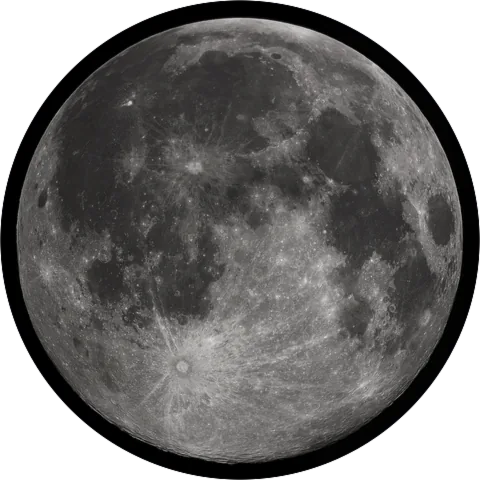
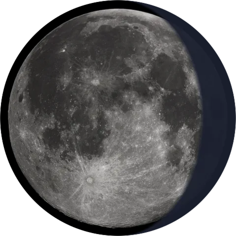
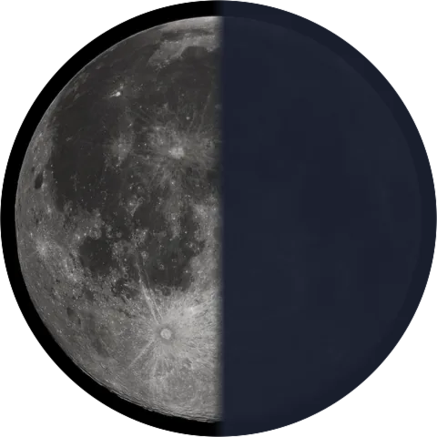
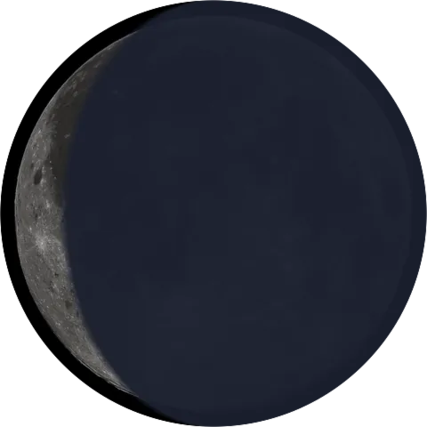

सोम · a lunar fast · now in beta
Fast with
the moon.
Soma is an app that lets you find the rhythm of your body with the Moon — every fast, every phase, in tune with the sky above you. It’s still early, but you can try it right now.
Tonight, right now
Today’s sky,
already computed.
Reading the sky…
Older than any app
Passed down
for generations.
In Hindu practice — Sanatan Dharma, the eternal way — people have followed the Moon for generations. Long before calendars and clocks, the sky told you when to fast, when to rest, and when to begin again.
It was wisdom you learned from your parents and passed on to your children. With Soma, we carry that same ancient knowledge forward — so anyone, anywhere, can keep the rhythm.
The tradition
A month that runs
with the Moon.
In the Hindu calendar, the month runs with the Moon. It grows from the new moon to the full, then fades back into darkness — and every turn begins a new cycle.
Each lunar day, or tithi, carries its own energy. On certain days we meet that energy with a fast — a vrat — bringing the body into synergy with the sky, and giving it a moment to reset.

अमावस्याnew




पूर्णिमाfull



What Soma follows
The four
main fasts.
-
एकादशी
Ekadashi
Comes twice a month, on the eleventh day of each half of the lunar cycle. It’s the one most people keep, usually without grains.
-
पूर्णिमा
Purnima
The full Moon. A day for offering, right as the month turns from growing to fading.
-
अमावस्या
Amavasya
The new Moon. The dark, quiet end of the month — a good time to slow down and start over.
-
प्रदोष
Pradosh
The thirteenth day, kept in the evening. A short one, right before nightfall.
Questions
A little
about the app.
What is Soma?
Soma is a free lunar fasting app that times your fasts to the phases of the moon, following the Hindu tradition of tithis and vrats. It computes tonight’s lunar day and shows you the next fast.
What is lunar fasting?
Lunar fasting is the practice of fasting on specific lunar days — such as Ekadashi, Purnima, and Amavasya — to align your body’s rhythm with the cycle of the moon. It’s a spiritual wellness practice observed for generations in Hindu tradition.
Which fasts does Soma track?
Soma follows the four main Hindu fasts: Ekadashi, Purnima, Amavasya, and Pradosh. It calculates tonight’s tithi automatically and tells you when the next fast falls.
Is Soma free?
Yes. Soma is free to use during its open beta. Open the app to find tonight’s tithi, see the next fast, and start keeping the rhythm.
Do I need to be Hindu to use Soma?
No. Soma is rooted in Hindu lunar tradition, but anyone looking for a spiritual wellness or mindful fasting practice can follow the rhythm of the moon.
What is Ekadashi?
Ekadashi is the eleventh lunar day of each half of the lunar cycle. It comes twice a month and is the fast most people keep, usually observed without grains.
Now in beta
Still early.
Take a look.
Soma is still early, and I’m building it out in the open — one fast, one phase at a time. There’s a working version you can open right now: find tonight’s tithi, see the next fast, and start keeping the rhythm. If it speaks to you, give it a go — and tell me what you think, good or bad.